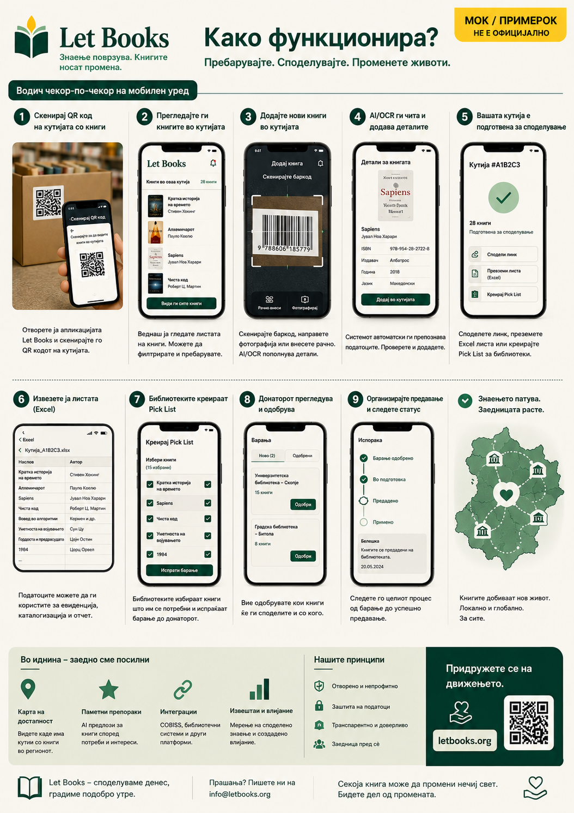

Текстот и тековите на работа на оваа страница го опишуваат правецот на проектот, а не завршена продукциска имплементација.
Водич за поединци
Попишете ја првата кутија без да го претворите сето тоа во голем проект.
Оваа страница е за приватни донатори, семејства, волонтери и помали организации кои сакаат да зачуваат важни книги и подоцна полесно да ги понудат и пронајдат.

Кога е овој водич за вас
- Имате книги дома, во складиште или во канцеларија.
- Сакате да знаете што има во секоја кутија пред да понудите нешто.
- Ви треба мобилен тек на работа со помалку пишување.
- Подоцна можеби ќе донирате на една или повеќе библиотеки.
Како изгледа успехот
- Ја скенирате кутијата и ја гледате нејзината содржина.
- Додавате нова книга за неколку секунди.
- Извезувате уредна листа за преглед.
- Повторно ги наоѓате бараните примероци кога ќе дојде време за преземање.
Брз тек на работа
Првиот помин мора да биде доволно брз за реални полици и реални кутии.
Скенирајте QR кутии
Отворете го точниот контекст на локацијата пред внесување.
Фотографирајте ја корицата
Корицата останува главниот визуелен ориентир за прегледување.
Скенирајте или внесете ISBN
Ако е видлив, искористете го. Ако не е, зачувајте и дополнете подоцна.
Зачувајте и продолжете
Брзиот внес не смее да бара целосна библиографија пред следната книга.
Извезете за преглед
Подгответе серија за библиотека или партнер.
Направете листа за преземање
Бараните книги се групираат по соба, полица и кутија.
Што е најважно да се забележи
Наслов, автор, година кога е видлива, состојба на примерокот и точна локација. Тоа се податоците што подоцна ја прават донацијата изводлива.
AI како помошник, не авторитет
Ако OCR или предлози за метаподатоци бидат вклучени подоцна, третирајте ги како предлози што бараат човечка проверка.
Пример: Семејство наследува професорска техничка библиотека, ги означува кутиите, ги фотографира кориците, извезува една серија за преглед и подоцна ги наоѓа точно оние примероци што ги сака библиотеката.